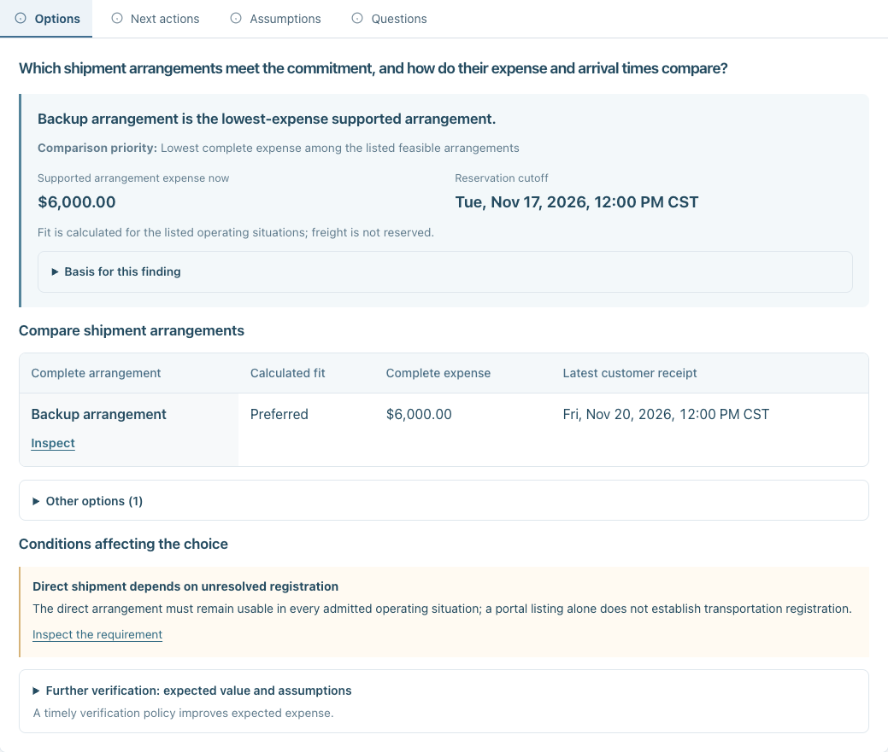
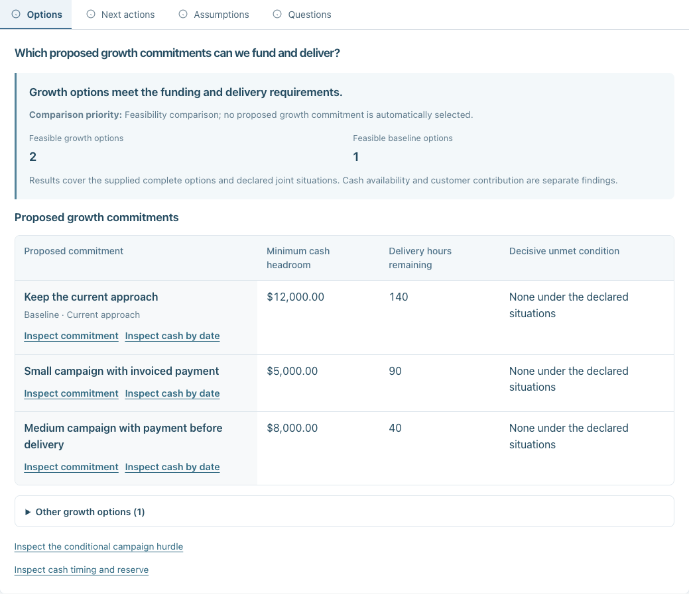

A lower price, a promising promotion or a larger order can make a commitment attractive. The harder question is whether the whole arrangement can work under the conditions you can establish today.
The Make a Bounded Commitment pattern starts with that question. Shipment planning, venue promotion and business growth show how the same approach connects different requirements before someone commits money or people. These are fictional worked situations with actual calculated findings.
Start with the whole response.
Maya is choosing freight. Alex is deciding whether venue staff can run outreach. Leah is assessing a growth campaign. Each has an appealing local action: book the cheaper carrier, send people outside or acquire more customers. Each action also creates obligations elsewhere.
A complete shipment arrangement connects its route to readiness and delivery conditions. An outreach deployment connects the people outside to coverage inside, timing and spending. A growth arrangement connects campaign expense, customer payment dates and the work the business must deliver.
Decision Lab assesses those supplied combinations against their declared requirements. That gives the decision maker a supportable set of responses to consider, with reasons for the ones that fail.
Compare the requirements behind each choice.
| Decision element | Shipment planning | Venue staffing | Business growth |
|---|---|---|---|
| Proposed commitment | Use a complete freight arrangement. | Send available staff on outreach. | Fund a campaign and fulfill the resulting work. |
| Decisive condition | Current registration confirmation covers the shipment. | At least four qualified staff remain inside. | Cash is available at each payment and delivery hours fit the period. |
| What changes the answer | A genuine current record establishes registration. | An additional callout reduces available staffing. | Payment dates or available delivery hours change. |
| Preference and uncertainty | A declared cost-first policy compares supported arrangements. | Guest thresholds inform the choice; attendance remains unknown. | The operating comparison leaves supported commitments unranked. |
The shared structure is recognizable. The records and calculations that establish support have different meanings in each domain.
Shipment planning: establish support before comparing price.
Maya has Direct at $4,000 and Backup at $6,000. Direct depends on current, correctly scoped transportation registration confirmation. Backup meets the recorded requirements across both registration states admitted in this example.
While registration remains unresolved, Direct’s lower quote does not establish an unconditional shipment proposal. A probability estimate would not replace the required confirmation either.


When genuine current confirmation becomes available, Direct enters the complete cost-first comparison. The prices stay fixed. Establishing a required condition changes which response is supported, after which the declared preference can favor the cheaper one.
Venue staffing: preserve coverage before considering turnout.
Alex has five qualified staff available and must keep four inside during the proposed outreach assignment. The two-person offers leave only three inside and fail coverage. Holding and the $200 one-person deployment meet the operating requirements.

At $40 retained contribution per genuinely additional guest, five guests cover the fixed $200 expense and six first exceed it. That tells Alex what the spending would need to achieve. It supplies no attendance prediction or calculated profit ranking among the passing responses.
Now reduce available staff from five to four while keeping the assignment and spending fixed. Sending one fails coverage; holding remains feasible. The five-guest hurdle is unchanged, but the team can no longer support departure. A different turnout expectation cannot supply the missing indoor staff.
Business growth: check when resources are needed.
Leah has $12,000 cash after other obligations, 140 incremental delivery hours and a three-day campaign commitment cutoff. The supplied large invoiced campaign needs $28,000 in peak funding and 200 hours. It fails both limits. The small invoiced campaign needs $7,000 and 50 hours; the medium prepaid campaign needs $4,000 and 100 hours. Both expansion options fit, alongside keeping the current approach.


The timing explains the funding failure. The large campaign pays $8,000 on day three and $20,000 in delivery expense on day seven. Starting at $12,000, Leah reaches negative $16,000 before collecting $60,000 on day thirty. A positive ending balance cannot fund the earlier payment.
The medium prepaid arrangement has $14,000 total expense but needs $4,000 in opening funding under its declared payment dates: customer receipts precede the delivery payment. Peak funding and total expense answer different questions.
Reduce only delivery capacity to 80 hours. Medium now exceeds capacity by 20 hours; small and the current approach remain feasible. Prepayment still helps the funding sequence, but it adds no delivery hours. This application checks aggregate capacity in a period; it does not construct individual employee schedules.
Transfer the approach and adapt the application.
Each comparison asks what a complete response requires, which records support it, and which changed fact would block it. The commitment assessment supplies that bounded operating judgment.
Applying the approach elsewhere requires the domain’s own definitions. A shipment registration condition, continuous indoor coverage and an ordered cash balance are different requirements. A cash input change can fit the existing growth model; new payment structures, alternatives or detailed schedules can require an adapted authored application.
Keep three questions visible: which responses meet the requirements, what priority could favor one, and who can make the commitment? Shipping uses an explicit cost-first preference. The venue and growth operating comparisons leave the choice open. The responsible person still needs a reason to spend and the authority to act.
For your situation, identify the complete alternatives, the obligations each creates, the conditions that must hold together and a changed fact that should alter the finding. That is a useful starting specification for a Decision Lab application.